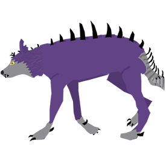
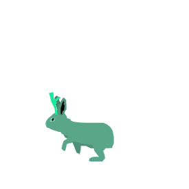
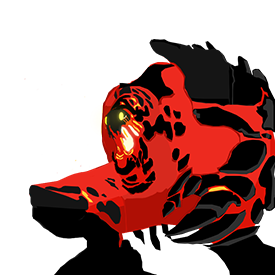

Photograph the Central American Cryptids. Click Here to Start.
REWARD: $
The Culprits
El Chupacabra

El Chupacabra(The goat-sucker) was first spotted in Puerto Rico in 1995 after life stock carcasses began appearing in various villages.
Discriptions of this creature have varied from sighting to sighting ranging from a kangaroo like creature to a wolf-like creature. A row of spikes
on the back of the creature is the only common feature among sightings.
Jackalope

Sightings for the Jackalope, a combination of the words jackrabbit and antelope, date back to the 13th century. Descriptions of this creature have stayed
consistant in almost every sighting. The Jackolope become prominant in the states in the 1930s when taxidermists began putting deer antlers on rabbit mounts, even though these
are not actually jackolopes, the taxidermist where inspired by previous sightings.
Cherufe

The Cherufe are believed to inhabit the magma pools found deep within the volcanoes in Chile. Though their natural habitat may be inside a scorching volcano,
there have been sighting above ground. Typically described as a creature made entirly out of hot lave, rocks, and magma; these creatures are believed by some to be the
source of earthquakes and volcanic eruptions. To try to prevent these natural disasters, certain cultures would provide a human sacrifice to a volcano to provide food for the Cherufe.